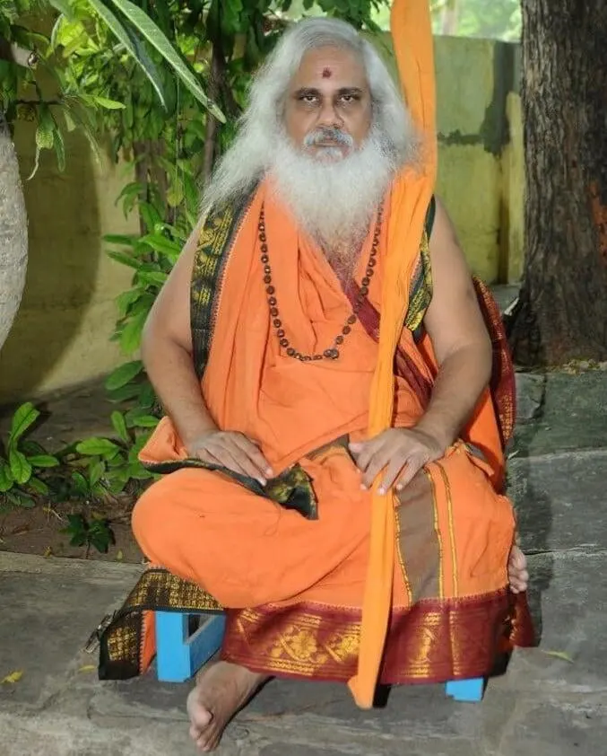

శ్రీ శ్రీ శ్రీ కమలానంద భారతి స్వామివారు
పీఠాధిపతి

శ్రీ శ్రీ శ్రీ కమలానంద భారతి స్వామివారు శ్రీ సిద్ధేశ్వరీ పీఠం, కుర్తాళం పీఠాధిపతి జగద్గురు శంకరాచార్య పరమహంస శ్రీ శ్రీ శ్రీ సిద్ధేశ్వరానంద భారతి స్వామి వారి నుండి సన్యాస ఆశ్రమాన్ని తీసుకుని తదుపరి శ్రీ చిదానంద ఆశ్రమంలో 2021 లో పీఠాధిపత్యా రోవాణం చేసారు.
మన గ్రామాలలోని దేవాలయాలను బలోపేతం చేయడం మరియు సనాతన ధర్మం మరియు మన సంస్కృతి మరియు వారసత్వానికి మూలాధారమైన గ్రామ దేవాలయాల పరిరక్షణ లక్ష్యంతో స్వామీజీ వారు 2007లో హిందూ దేవాలయ పరిరక్షణ సమితి స్థాపించారు.
“సంపూర్ణ గ్రామ దేవాలయ సందర్శన" పేరుతొ మొదటిసారి 2007 లో జ్ఞాన సంస్వతి దేవస్థానం, బాసర నుండి తిరుమల శ్రీ వేంకటేశ్వర స్వామి దేవస్థానం వరకు: రెండవసారి 2008 లో శ్రీకూర్మం నుండి తిరుమల శ్రీ వేంకటేశ్వర స్వామి దేవస్థానం వరకు: మూడవసారి 2009 లో ఉజ్జయిని మహంకాళీ దేవాలయం నుండి సికింద్రాబాద్ పరిధిలో పాదయాత్ర నిర్వహించారు.
మరల 2012 లో “సమస్త భారత దేశము ఒక పవిత్ర దేవాలయము, ప్రతి దేవాలయం భారత తత్వాన్ని ప్రతిబింబిస్తుంది" అనే భావనతో “మన దేవాలయాలను మనమే నిర్వహించుకుందాం - మన దేవాలయాలను మనమే కాపాడుకుందాం - మన సమాజాన్ని మనమే సేవించుకుందాం”, “దేవాలయ నిర్వహణలో ప్రతి హిందువు భాగస్వామి కావాలి" అనే పిలుపులతో రథయాత్ర నిర్వహించారు. ఈ యాత్రలలో భాగంగా స్వామీజీ వారు ఆంధ్ర, తెలంగాణ రాష్ట్రాలలో 8,500 గ్రామాలలో విస్తరించి ఉన్న 35,000 దేవాలయాలను సందర్శించారు.
యాత్రలలో భాగంగా గ్రామంలోని దేవాలయాలను సందర్శించడం; గ్రామంలోని ప్రతి కుటుంబాన్ని దేవాలయోమ్ముఖం చేయడం; వివిధ కులాల వారిని, ప్రత్యేకించి దళిత బంధువులను కలవడం; వివిధ కులాల ఏర్పాటు వెనుక వున్న శాస్త్రీయత, వృత్తుల సాంకేతిక విషయాలను వివరించడం; వాటిని అధ్యయనం చేసి అర్ధం చేసుకోవాల్సిన అవసరం వివరిస్తూ యువతకు మన సంస్కృతి గురించి అవగాహన కల్పించడం; మన ధర్మాన్ని మరియు ఆలయాన్ని పరిరక్షించడానికి స్థానిక యువత ఒక సార్వత్రిక భక్త సమాజముగా ఏర్పడి పనిచేయడానికి ప్రోత్సహించడం చేసారు. వేలాది భక్తి సంగమాలు నిర్వహించారు.
మన ప్రాచీన హిందూ దేవాలయాలు శిధిలమవుతున్నాయి. దేవాలయ భూములు ఆక్రమితమవుతున్నాయి. వేలాది దేవాలయాలు మూతపడ్డాయి. యిప్పటికైనా మనమంతా భక్తి కలిగిన బాధ్యతాయుతమైన హిందువులుగా కదిలి వచ్చి మన దేవాలయవ్యవస్థను కాపాడుదాం అనే ఆకాంక్షతో అనేక సమస్యలను ఎదుర్కొని, దాడులను తట్టుకొని, ఉద్యమాలు నిర్వహించి తిరుమల తిరుపతి దేవస్థానం భూములతో సహా వేలాది ఎకరాల దేవాలయ భూములను ఆక్రమణలనుండి కాపాడారు.
అలాగే ఎవరూ ప్రస్తావించని దేవాలయ అర్చక వ్యవస్థను ప్రత్యేకించి పరిశీలించి అర్చకుల బాగోగులు, ఆర్ధిక విషయాలు, వారి కష్టాలు-కన్నీళ్లు, సమస్యలగురించి స్పందించి అర్చక సమాఖ్యాతో కలిసి పనిచేసి వృద్ధ అర్చకులకు ఫించను, అర్చకులకు స్కేలు నిర్ధారణ, ధూప దీప నైవేద్య పధకం, అర్చక సంక్షేమ నిధి, ధార్మిక పరిషత్ ఏర్పాటు కొరకు చట్ట సవరణ చేయించగలిగారు.
స్వామిజీ ప్రతి నెలలో 20 రోజులు గ్రామాల పర్యటనతో సాధారణ హిందువులలో చైతన్యం కలిగిస్తూ ఎక్కడ అవసరమైతే అక్కడకు చేరుకొని, వేగవంతమైన, చురుకైన, క్రియా శీలమైన తక్షణ చర్యలతో హిందూ సమాజానికి మేం ఉన్నామనే భరోసా కల్పిస్తూ, దేవాలయాల విషయంలో స్థిరమైన, నిబద్ధత కల్గిన, ఆదర్శవంతమైన, ఆచరణాత్మకమైన, ప్రత్యామ్నాయ దేవాలయ వ్యవస్థ కోసం స్పష్టమైన అవగాహనతో, లక్ష్య శుద్ధితో మీదుమిక్కిలి సహనంతో ముందుకు సాగుతున్నారు.
ఈ దేశాన్ని కబళించి వేయాలన్న దుర్మార్గపు ఆలోచనలతో బుసలు కొట్టే విద్రోహ శక్తులకు సమాధానం చెప్పే అగ్నిపుంజము - శ్రీ శ్రీ శ్రీ కమలానంద భారతి స్వామి వారు. ఎప్పుడెప్పుడు ఎక్కడెక్కడ సమస్య ఏర్పడితే ఆ సమస్యని పరిష్కరించడానికి ఎంతెంత సాహసమైన చేయడానికి సిద్దపడుతూ దానివల్ల ఎంత ప్రతికూలమైన సందర్బాలు ఏర్పడతాయో తెలిసున్నప్పటికీ దానివల్ల ఎన్నో ఉపద్రవాలు ఎదుర్కోవాలి అని తెలిసున్నప్పటికీ కూడా సనాతన ధర్మ పరిరక్షణమే తన ధర్మముగా భావిస్తూ సాహసోపేతంగా సమాజాన్ని ఆదుకోవడంలో కృతకృత్యులు అవుతున్న మహానుభావులు శ్రీ శ్రీ శ్రీ కమలానంద భారతి స్వామివారు.
స్వామి వారికి వివిధ విషయాలపై వున్న విస్తృతమైన పరిజ్ఞానం మరియు హిందూ ధర్మ పరిరక్షణపై వారి వైఖరికి ప్రసిద్ధి చెందారు. స్వామీజీ హిందూ ధర్మవ్యాప్తి, పరిరక్షణ, సమాజ సంఘటన, సమరసత మరియు అభివృద్ధికి సమాజానికి మార్గనిర్దేశం చేస్తూ అందరిని ఆశీర్వదిస్తున్నారు.